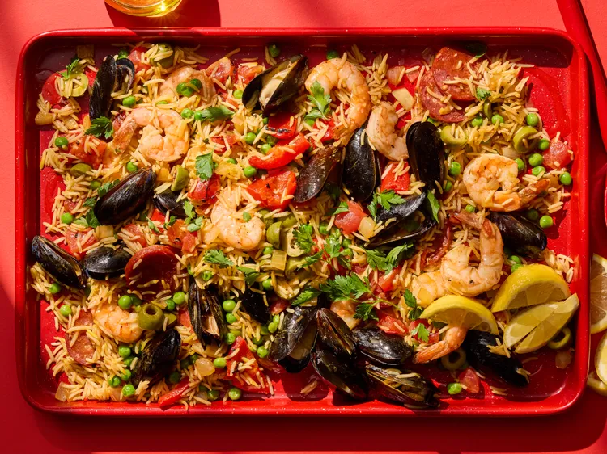

Home
Sheet Pan Paella

Description
This Sheet Pan Paella proves you don't need a paella pan—or a lot of effort—to make restaurant-worthy paella at home.
The oven toasts the rice for that signature nutty flavor, then veggies, smoky chorizo, and seafood roast together on the same pan for an impressive, flavor-packed meal any night of the week.
Ingredients
- 3 tablespoons olive oil, plus more for serving
- 1 cup parboiled long- grain white rice (see Note on bottom of the recipe)
- 2 cups low-sodium chicken broth
- 1/2 cup chopped onion
- 3/4 teaspoon smoked paprika
- 1/2 teaspoon salt
- pinch of saffron threads
- 8 ounces frozen large shrimp (31 to 35 per pound), thawed, peeled, and deveined
- 1 (15-ounce) can diced fire-roasted tomatoes, drained
- 4 ounces Spanish chorizo, halved lengthwise and thinly sliced crosswise
- 1 cup frozen peas
- 1/2 cup coarsely chopped roasted red bell pepper
- 1/2 cup sliced green olives, such as Castelvetrano or Cerignola
- 1 pound mussels, scrubbed and debearded
- chopped fresh parsley, for garnish
- lemon wedges, for serving
Steps
- Preheat the oven to 350 degrees Fahrenheit (180 degrees C). Coat a 13x18-inch rimmed sheet pan with 2 tablespoons olive oil. Heat baking sheet in the oven for 5 minutes.
- Carefully remove pan from the oven using oven mitts. Spread rice on the pan in an even layer. Return to the oven and bake until lightly toasted, about 5 minutes.
- Meanwhile, combine broth, onion, 1/2 teaspoon smoked paprika, 1/4 teaspoon salt, and the saffron in a bowl. Pour broth mixture over rice in the pan. Cover tightly with foil.
- Bake until rice is almost tender, about 20 minutes. Remove pan from oven and discard foil. Increase oven temperature to 425 degrees Fahrenheit (220 degrees C).
- Combine shrimp with remaining 1 tablespoon olive oil and 1/4 teaspoon each smoked paprika and salt in a bowl; toss to combine
- To the rice mixture, add tomatoes, chorizo, peas, roasted red pepper, and olives; stir to combine. Top with shrimp and mussels. Bake, uncovered, until rice is tender, shrimp are opaque, and mussels have opened (discard any mussels that do not open), 10 to 12 minutes. Garnish with parsley and serve with lemon wedges and additional olive oil.